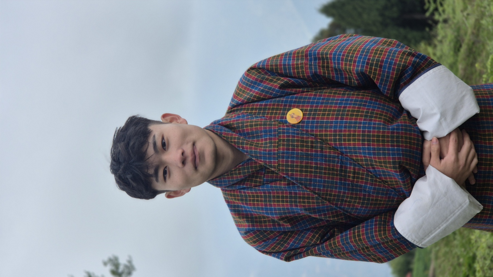

Pelden Dorji is a student from Sherubtse College under the Royal University of Bhutan.
Co-founder of the Serpent Guard conservation initiative.
Project Disclaimer: This website is a conceptual educational assignment.